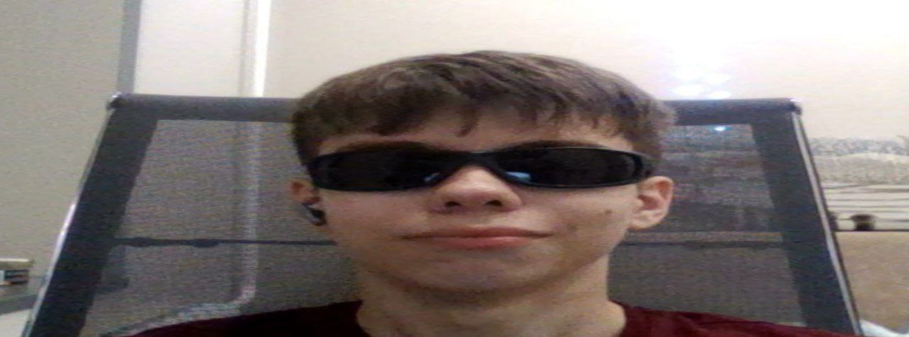

Альберт

aka
ynero4ka / yusayner / 0AlBrexT
пиздюк
миленький девственник
мощный дефер
вибратор вертухи
питается чешуйницами
смерть в нищите
пользователь MAX
после ебли с таксистом
Back to Sentimental